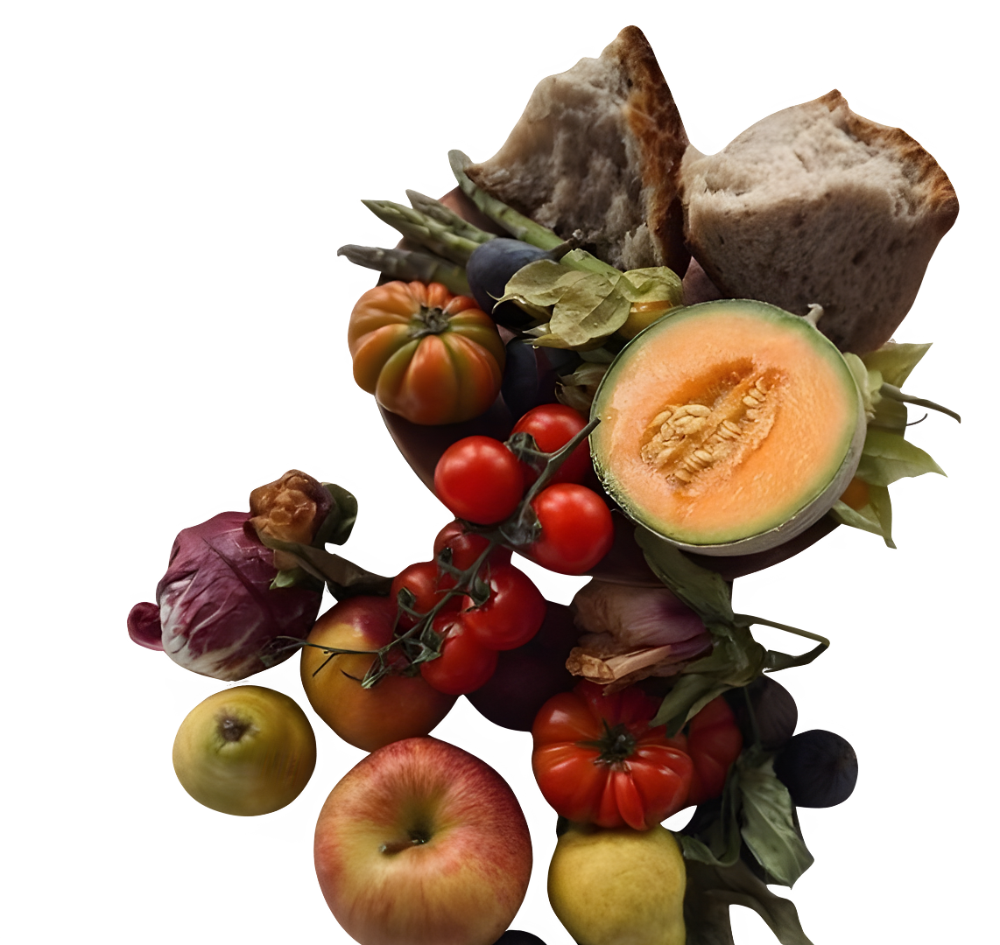

home
categories
recipes
Recipe.com
contacts
about
more
login
home
categories
recipes
Recipe.com
contacts
about
more
login
01.
02.
03.

Organic Recipes
at your doorstep
In a world full of fast-food fixes and complicated ingredient lists, getting back to basics has never felt more important. Eating organic isn't just a trend; it's a commitment to the simplest, cleanest form of food: produce grown without synthetic pesticides or fertilizers. It’s about choosing flavor and health. But we know what you’re thinking: organic cooking means complicated, time-consuming meals. Think again! We're here to prove that pure, organic goodness can be achieved in minutes, even on the busiest days.